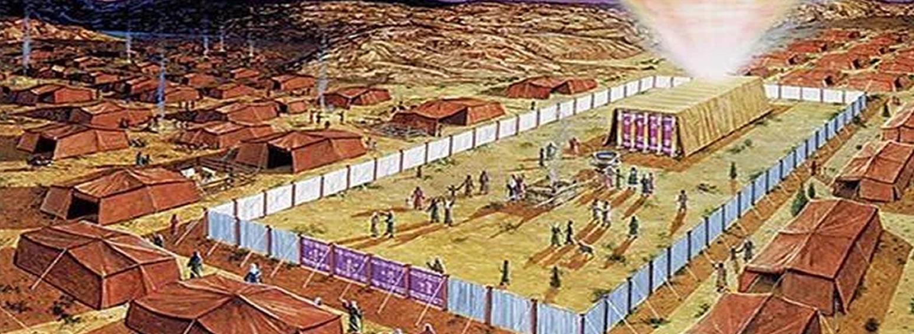

Tabernacle: Dwelling Among the People (Exodus 25 - 40)
"Let them make me a sanctuary, that I may dwell in their midst." (Exodus 25:8)
The Tabernacle is more than a tent - it's a theological statement. After covenant is given at Sinai, God instructs Israel to build a dwelling place. Every detail - from gold clasps to embroidered cherubim - reflects divine intentionality. The Tabernacle becomes the center of worship, guidance, and presence.

Design and Symbolism
God provides exact specifications. Materials are gathered through freewill offerings. Skilled artisans, filled with the Spirit, craft each element. The Ark of the Covenant, the lampstand, the altar - all point to holiness, mediation, and access.
- Ark of the Covenant: God's throne and testimony.
- Holy of Holies: The innermost sanctuary of divine presence.
- Priestly garments: Beauty and consecration for intercession.
God Dwells with His People
When the Tabernacle is completed, the glory of the Lord fills it. Moses cannot enter - God's presence is overwhelming. This marks a shift: God is no longer distant, but dwelling among His people. The journey from Eden's exile to Exodus's intimacy finds a new chapter.
Relevance to Salvation
- God desires to dwell with His people - not just rescue them.
- Worship is structured, sacred, and Spirit-led.
- The Tabernacle foreshadows Christ, who "tabernacled" among us (John 1:14).
"Then the cloud covered the tent of meeting, and the glory of the Lord filled the tabernacle." (Exodus 40:34)